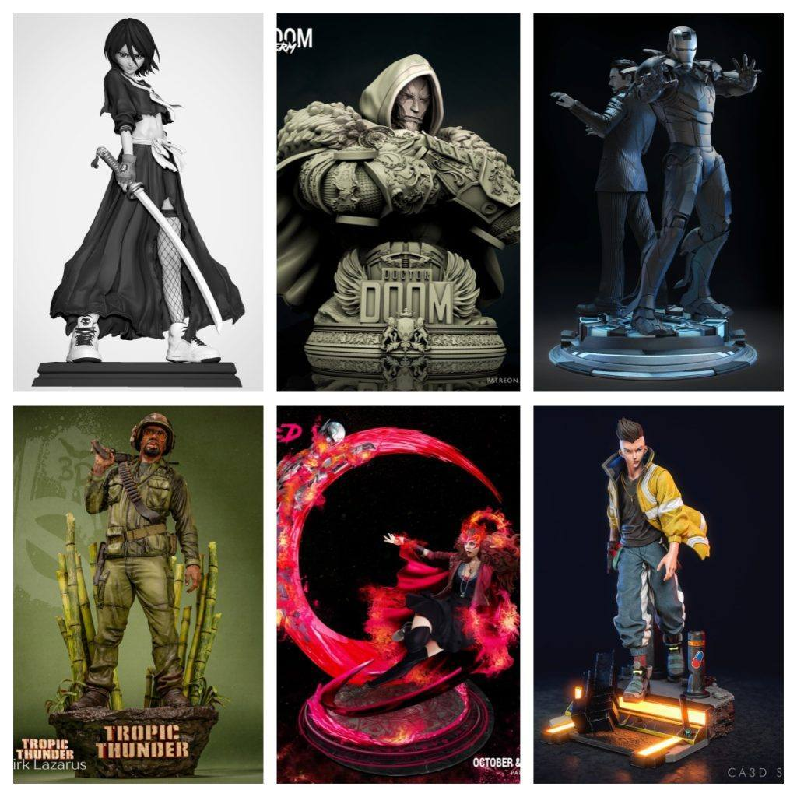
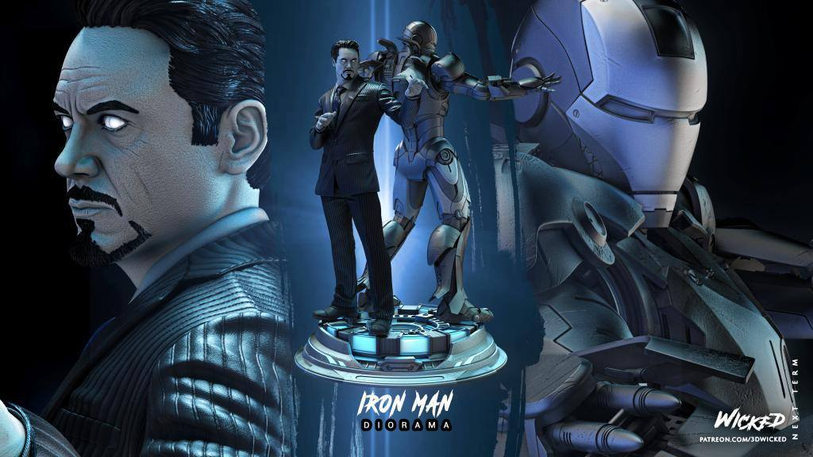
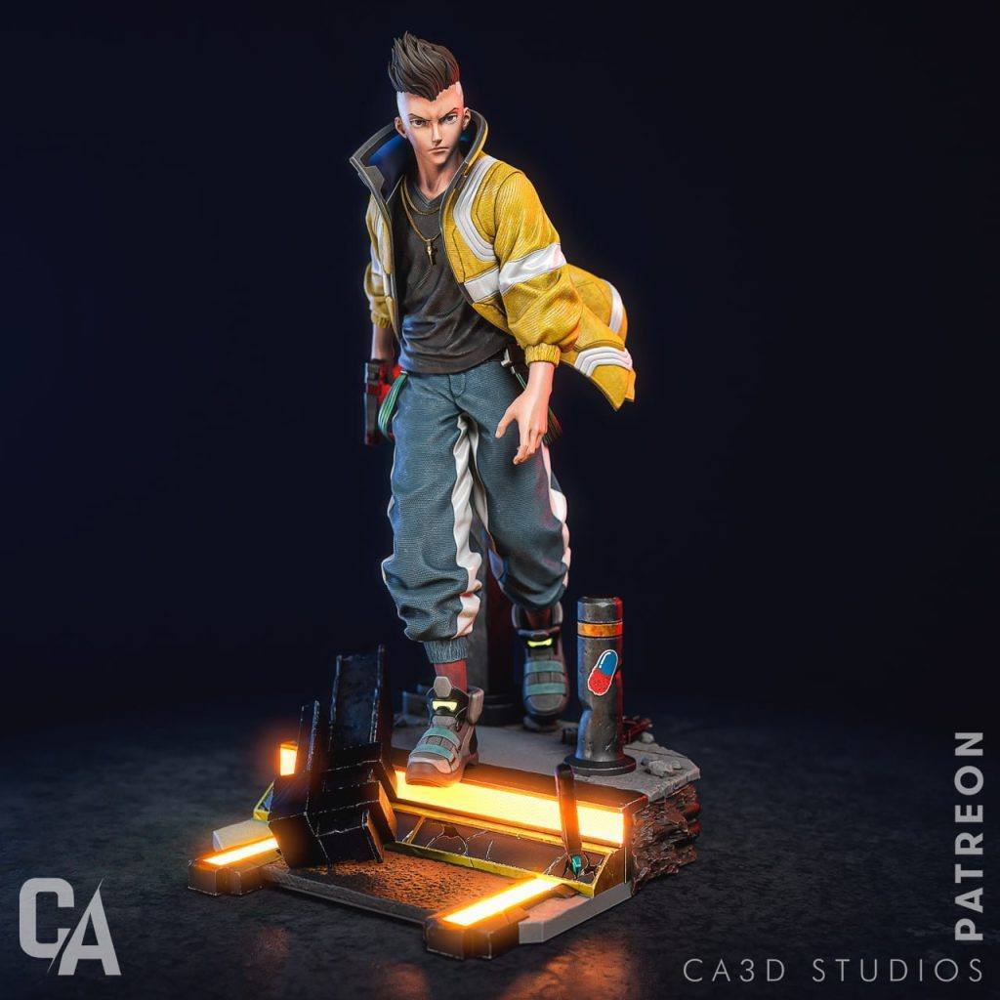

2025年03月07日STl图纸文件分享
提取码
znz1
今天分享六组精彩模型，涵盖多个经典角色。首先是朽木露琪亚的雕像，精度和还原度都很高，展示了她标志性的战斗姿态。毁灭博士模型，细节完美，特效件增加了视觉冲击力。钢铁侠的雕像，经典造型，极具科幻感，适合收藏。接着是绯红女巫，细腻的动态和服装设计都令人印象深刻。《热带惊雷》中的柯克·拉扎鲁斯，电影风格浓厚，动作设计极具个性。最后是《赛博朋克2077》中的大卫·马丁内斯，展示了未来科技感的细节和角色特点。每一组模型都具有高质量和丰富的表现力，适合各位模型爱好者。



通过网盘分享的文件：0307
链接: https://pan.baidu.com/s/1d51UMEQDD6alPc9zftXonA 提取码: znz1
以上内容仅供个人使用（非商用）
ONLY for PERSONAL (NON-COMMERCIAL) use.
加群获得更多免费模型！